2026 Product Design Challenge · TikTok × Local Services
The video makes you hungry.
The page helps you decide.
People get hungry on TikTok but leave it to decide, because the place page can’t show what to order, what it costs, or whether the recommendations are real. Answering that over the video keeps the decision, the time spent and the trust inside TikTok.
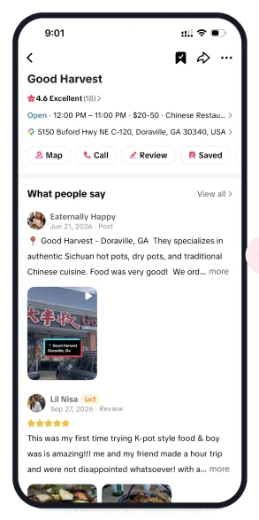
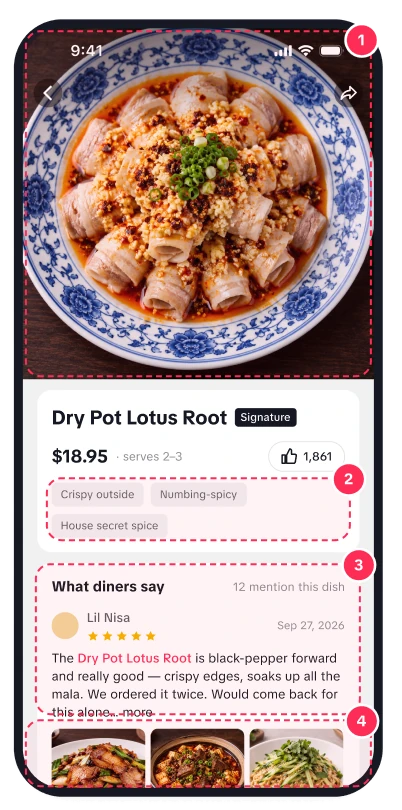
TikTok wins discovery. The decision still happens somewhere else.
of Gen Z discover new restaurants on TikTok, their #1 channel
Toast survey, Oct 2025, 1,466 US adultsof consumers read reviews before choosing a local business
BrightLocal Local Consumer Review Survey 2026only trust reviews from the last three months
BrightLocal 2026won’t use a business with fewer than 20 reviews
BrightLocal 2026Search-led choice
User arrives with a need, then searches
- Search “Sichuan near me”
- Compare stars and review counts
- Read menus on the restaurant site
- Decide, then open Maps
Content-led choice
A video creates the craving first
- A dish in a video makes you hungry
- Tap the place tag
- Need: what to order, what it costs, can I trust it
- Today: leave TikTok to answer these
Content creates the cravingTikTok carries the decision
The place page today
It lists the restaurant’s basics. It doesn’t help you decide.
Rating, hours, price range, distance, four equal buttons and What people say.
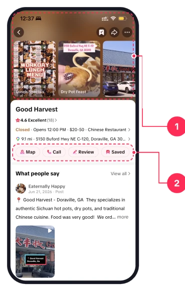
- Opens full screenThe video stops. The context that created the craving is gone.
- Four equal buttonsWebsite · Map · Call · Review. No primary action, no next step.
The precedent we build on
TikTok Shop half sheet
The sheet slides up while the video keeps playing: decision signals and one red CTA. Local doesn’t use it yet.
Why it matters for the business
The tag tap is the most engaged moment in local
Today it ends in Google Maps. The value is keeping the decision, and the user, inside TikTok.
User side
Users arrive with a very specific expectation
That dish, that atmosphere, from that video. The place page does not know what they came for.
Inside TikTok
Leaves TikTok
- 01Scroll a videoCrave a dish
- 02Tap the place tagFull-screen page, the video stops
- 03Basic info + reviewsNo menu, no prices
- 04Leave TikTokMenu and reviews on another app
- 05Copy the addressInto Maps or a ride app
Problem statement
The page shows the restaurant, not the food.
So the decision moves to Google Maps, Rednote or Yelp, and TikTok loses the moment it created.
What we observed
- Diners look for the menu first, before reviews. Some open the restaurant’s website just to find it.P1–P4
- Chinese-American diners check Rednote for reviews they trust, then Google Maps for the address.P1
- Once a place is chosen, the next action is immediate: directions or a ride.P2 · P3
- Price questions in the US are about the final total, tax and tip included.Brief
- Price and distance decide “worth the trip”. Today they are on the page, but easy to miss.P4
- Reviews with other diners’ food photos are trusted more than a star rating.P4
What diners check before deciding
- What to order
- What it costs
- How far, how long the wait
- Is the dish worth it
Voice of users
What they told us
Four Atlanta diners who find restaurants on TikTok. Before and after the prototype.
“I look at the dishes first. If it’s the one I want, then I check the rating.”
P2 · before
“The info isn’t thorough enough, so I jump between apps.”
P3 · before
“I search the name in TikTok, then go straight to Google Maps.”
P3 · before
“I check Rednote for real reviews before I trust a place.”
P1 · before
Problem summary
The problem in three words
The place page shows the restaurant, not the dishes.
Users can’t tell if it’s worth it.
The decision moves out, and the craving the video created is lost on the way.
Stage we focus on · Decision-makingNot discovery (the feed does that). Not booking (Must Eat and OpenTable do that).
Not more restaurants. More confidence to go to this one.
Discovery is already TikTok’s strength. More options don’t help someone who already wants this place.
Answer what to order, what it costs and whether the recommendations are real, right on the place page.
-
Need
Know what to order
Dishes, combos, price and portion on the place page
System 1 · Dish informationP1–P4 all looked for the menu before reviews.
-
Moat
Trust the number
Only diners who have been there can recommend
System 3 · Trusted recs“If everyone can recommend without eating there, it’s not that credible.” P4
-
Short path
Go in one tap
Find it guide, Get a ride and Guide me there on every screen
System 2 · Getting thereP3 copied the address into Maps once decided.
Design boundary
Scrolling stays untouched
We only change what happens after the tap on a place tag. The feed, the video and the action rail are TikTok’s as they are.
Content model
Menus from the restaurant, recs from diners
The restaurant provides dishes, combos and prices. The recommend count on each dish comes from diners who have been there.
What’s new · two mechanisms TikTok doesn’t have today
The place page opens over the video
The video that created the craving stays on screen while the user decides. Today the page replaces it.
Recommendations only from people who were there
A like on a dish counts only after a check-in. The number becomes something people can trust, and it grows with every visit.
Trust the recs. Know what to order. Know how to get there.
Entry point
Tap the tag, the sheet comes up, the video keeps playing

- Video keeps playing aboveThe user never loses the thing that made them want to go. Same pattern as TikTok Shop, nothing new to learn.
- Stats capsule: rating · hours · per personThe three numbers that decide “go or not” at a glance. Per person, not a price range, because US diners ask what the night will cost.
- Dishes before reviewsEvery participant looked for the menu first. TOP badges and recs counts; View all opens the full menu.
- What people say staysReviews are not removed, they move below the dishes.
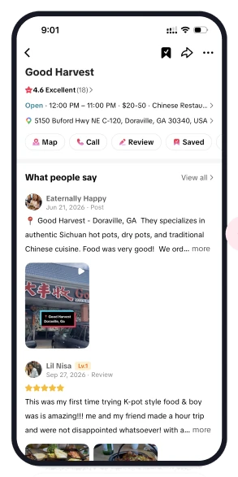
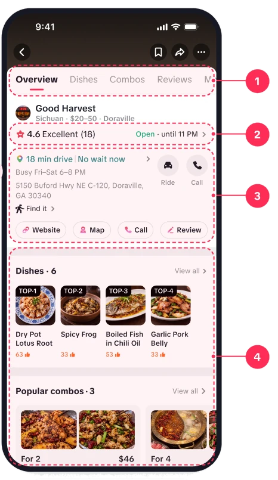
- Tabs jump to what you needOverview · Dishes · Combos · Reviews stay pinned. The menu is one tap away.
- Rating and open status at a glance“4.6 Excellent · Open until 11 PM”. The go or no-go basics, before anything else.
- Getting there lives in the first sectionDrive time and wait first, then the address with Find it, Ride and Call. No scrolling back up.
- Dishes and combos come nextThe same module as the half sheet, now with combos and View all for the full menu. Reviews follow below.
Edge case · No dish data
Fall back to today’s layout
Basic info and reviews, no empty module. The sheet never shows a hole where dishes should be.
Edge case · Closed now
Guide me there stays
The button shows the next opening time, so the user decides for themselves whether to go later.
Two heights
Half to glance, full to decide
Swipe up for the full place page with tabs. Swipe down to close and return to the video.
System 1 · Dish information
Enough detail to decide
Three screens. Each one answers a question the place page could not.

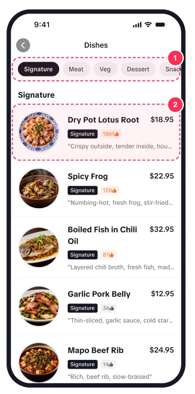
- Owner-maintained menu“Updated 2 days ago” shows it’s current. View all opens the full menu.
- Photo first, then likesReadable at a glance. A like count from visitors beats a 4.3 for one dish.
- Combos for 2 and 4What people order together, with the total price for the table.
- Sticky category chipsTap to jump, scroll to highlight. One page, nothing hidden behind tabs.
- Rows that answer it allPhoto, price, likes and a taste note. Full-width, easy to tap.
- Big photo, price, servesA thumbnail isn’t enough to commit. “Serves 2–3” sizes the order.
- Taste in three wordsCrispy outside, numbing-spicy, house spice. For first-timers.
- Reviews about this dishOnly reviews that name the dish, with the name highlighted.
- Keep browsing, keep the exitMore dishes below. Get a ride and Guide me there stay pinned.
Interaction · After P2
Whole tile is tappable
Photo and name both open the dish. Menu rows are full-width targets. Fixed after P2 could not hit the entries.
Interaction · Two ways in
Dishes tab vs View all
From the Dishes tab the main tabs stay (two-level nav), because the user may go back to Overview. From View all the main tabs hide, because the user is in menu mode.
Interaction · Scrollspy
Chips follow the scroll
On both menus the current category highlights as you scroll, and tapping a chip scrolls to it. A short lock so the highlight does not flicker.
System 2 · Getting there
Find the place, go anytime
Leaving is the last step, not the first. Two parts: a guide to the door, and the exit on every screen.
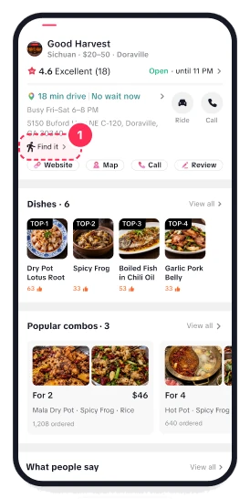

Find it · a step-by-step guide to the door
- Entry under the addressWhere the user already looks for “how do I get there”.
- Storefront firstSo they recognise the place when they arrive.
- Numbered steps with real photosExit sign, plaza sign, storefront. In a plaza full of Asian restaurants, Maps gets you to the parking lot, not the door. Borrowed from Meituan’s store guide, rebuilt in TikTok components.
Always on · two buttons on every screen
Pinned onPlace pageDish videosFull menuDish detail
- Why two buttons, not one
- Driving and riding are different modes. One primary + one secondary matches TikTok Shop’s “Add to cart + Buy now”.
- Why the primary is Guide me there
- Every platform’s primary CTA reflects its goal. Meituan: buy the deal. Rednote: post a check-in. TikTok Shop: buy now. Google Maps: directions. Ours: turn the craving into a visit.
- Why we don’t build navigation
- Google and Apple are better at it. We hand off after the decision, not before, with the destination filled in and the choice remembered.
- Get a ride shows a price
- “from $20 · Uber / Lyft” answers the last question before going, right on the button.
System 3 · Trusted recommendations
Only diners who have been there can recommend
The recs count is what people decide by, so it has to be real. A like is the cheapest way to collect it, and a check-in makes sure it comes from a visit.
| Measure | Like | Review | Video |
|---|---|---|---|
| Cost | 1 tap | 50+ characters, a photo | Film, edit, post |
| Volume | Most people do it | Few people do it | Fewest people |
| Signal | Points at one dish | Dish name buried in text | Dish has to be recognised |
Who can recommend · any one
At the restaurant
Location read once, at the moment of the tap. Same as Rednote check-in.
Arrived by Guide me there or Get a ride
The trip ended at this restaurant.
Posted a video tagged here
Already proves the visit.
Tap like on a dish

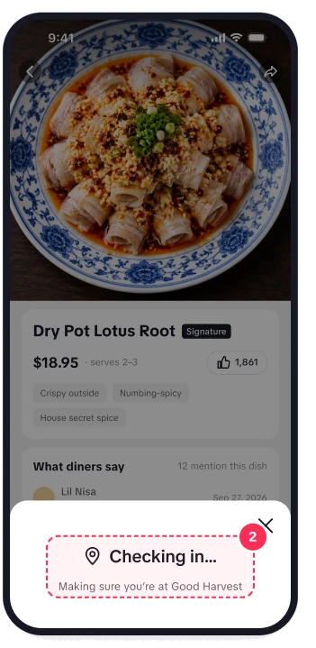
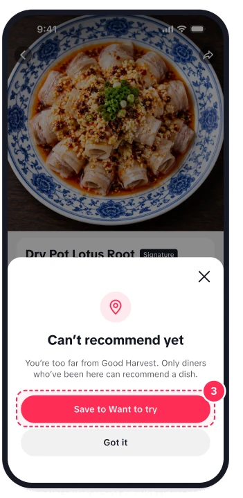
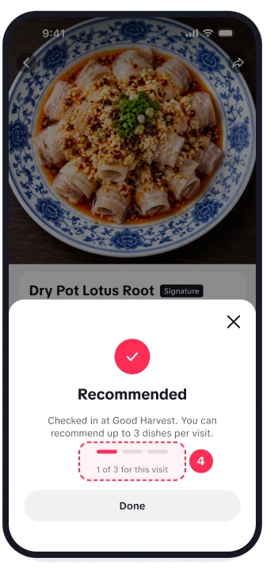
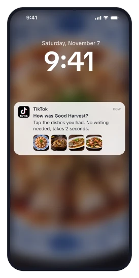

When we ask · after the meal
People rarely come back to a dish page after eating. So we ask once, at the right time.
- Trigger
- A few hours after Guide me there or Get a ride ends at the restaurant.
- Action
- Tap the dishes you had. No writing needed. The written review below it stays as it is today, for people who want to say more.
- Counted as
- A visit-verified rec for each dish tapped, up to three.
Hypothesis, not yet verified
A one-tap message after a real visit collects far more dish recs than waiting for people to like a dish on their own.
How we’d check: message tap rate, recs per visit, and how many restaurants reach 20+ recs.
Rules that keep the number honest
Picking makes a rec mean something.
Repeated taps do not stack.
Stronger proof counts more.
Recent recs rank higher.
Honest limit
A check-in proves the visit, not the bite.
- They were at the restaurant
- They ate this exact dish
Across hundreds of likes, the few that miss even out.
Scenarios
Every state the user can land in, and what triggers it
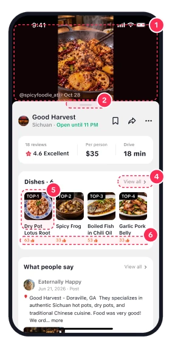
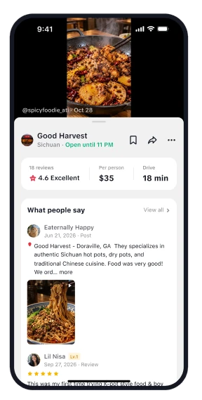
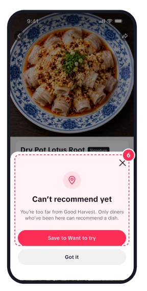
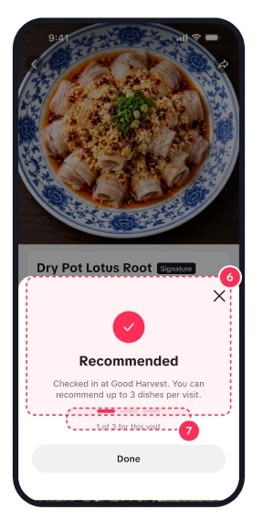
| User action | What happens | Why |
|---|---|---|
| Tap place tag | Half sheet slides up, video keeps playing | Keep the context that created the craving |
| Swipe sheet up | Full place page with tabs | Half to glance, full to decide |
| Swipe sheet down | Back to the video | Exit is always one gesture |
| Tap View all | Full menu, main tabs hidden, category chips stick | User is in menu mode |
| Tap a dish | Dish detail with price, serves, per-dish reviews | A thumbnail is not enough to commit |
| Tap like on a dish | Location read once, then counted or declined | Only visits count, so the number can be trusted |
| 4th like in one visit | “3 of 3 used” | Picking makes a rec mean something |
| Tap Guide me there / Get a ride | Open Maps or Uber with the destination filled in | Hand off only after the decision |
Interaction flow
The whole journey, from a video to the door

Always an exit
Leave or go, in one gesture.
Swipe down, back to the video
Works on the half sheet, the full page and the menu.
Guide me there and Get a ride, always pinned
On the place page, the menu and every dish.
The loop
Every visit makes the next decision easier
- Watch a video
- See dishes + recs
- Guide me there
- Eat, tap like (checked in)
- Recs go up
For diners
Decide faster next time
More recs per dish, from people who were there.
For TikTok
The decision stays in the app
Every trip that starts here can come back as a rec or a video.
For restaurants
Good dishes get found
Recs reward what is good now, not who paid.
The same recs, beyond the place page · concept
On the video
Top dish on the place tag
“Good Harvest · Top dish: Dry Pot Lotus Root” on the anchor, before anyone taps.
Local feed
Recs on restaurant cards
Rank nearby places by dishes people actually recommend.
Search
Search by dish
“Lotus root near me” returns places where that dish has the most recs.
Save
Want to try list
Saved dishes come back when you are nearby at mealtime.
Anticipated questions
What a reviewer will ask, answered first
Google Maps already has menus and reviews. Why build this in TikTok?
Craving happens on a videoTikTok knows the dishGoogle only drives
Google doesn’t know which dish made them want to go. The decision should happen where the intent was created, and Google handles the last step, the drive.
Isn’t this just Meituan’s dish module copied over?
Same pattern, new logicPrimary action is GoNo coupons
Meituan’s module sells group-buy deals. Ours gives decision information. US diners pay after the meal, with tax and tip, so a coupon price wouldn’t answer their question.
How is this different from Must Eat?
Must Eat: where to eatOurs: is it worth itComplementary
Must Eat is curated lists in three metros. This works after one specific video, for any tagged restaurant anywhere.
Why a half sheet instead of a better full page?
The video is the evidenceTwo heightsSame as TikTok Shop
If the page replaces the video, users lose what they’re judging by. Half to glance, full to decide, the same pattern as TikTok Shop, so nothing new to learn.
How do you know the recommend count is real?
Been there to countChecked once at the tap3 dishes per visit
Only diners who have been there can recommend. The like checks location once at the tap; arriving by Guide me there or Get a ride, or posting a tagged video, also counts. Three dishes per visit, one rec per dish.
Why would anyone come back to recommend?
One message after the tripOne tap per dishHypothesis to test
We don’t wait for them to. A few hours after the trip, one message asks which dishes they had. One tap per dish, no writing. This is a hypothesis we would test after launch.
The whole decision now happens in TikTok.
How we tested
Same person, same task, two versions
Atlanta diners who find restaurants on TikTok. Each did the same four tasks on today’s TikTok first, then on the prototype. We watched where they went and what they said.
4 participantsBefore: today’s TikTokAfter: the prototypeSame target tasks
What we recorded
- Apps opened
- Left TikTok or not
- Where they hesitated
- What they said
Counts, not percentages. Four people shows direction, not a rate.
Apps needed to decide
| Participant | Before · today’s TikTok | After · prototype |
|---|---|---|
| P1 | TikTokRednoteGoogle Maps Checks Rednote for real reviews before trusting a place. | TikTokMaps · hand-off Found dishes, prices and reviews on the place page. |
| P2 | TikTokGoogle MapsLyft Wanted reviews and dish prices before going. | TikTokLyft · hand-off Decided without leaving. Both were on the page. Flagged the tap targets. |
| P3 | TikTokGoogle Maps Searched the name in TikTok, then jumped straight to Google Maps. | TikTokMaps · hand-off Whole loop in TikTok. “It met all my needs, I didn’t hesitate.” |
| P4 | TikTokRestaurant website Opened the restaurant’s website to see the menu. | TikTokUber / Lyft · hand-off Found the menu, portion size and dish photos on the place page, then tapped Get a ride. |
“It met all my needs. I didn’t hesitate, I went straight to directions.”
P3 · after using the prototype, whole loop in TikTok
What held, what we changed
All 16 tasks were completed. Four findings changed the design.
| Task | P1 | P2 | P3 | P4 |
|---|---|---|---|---|
| Find what dishes they have | ||||
| Check what it costs | ||||
| Read what diners say | ||||
| Get directions or a ride |
What we found · what we changed
- P2Missed the small tap targetsWhole tile is tappable
- P1–P4Looked for the menu firstDishes sit above reviews
- P3Copied the address outExit pinned at the bottom
- P4Didn’t get what “recs” meantNumber + thumbs-up
What builds trust
Detail, not just more reviews
Diners trust reviewers who know the cuisine, and exact dish descriptions. Per-dish reviews answer both.
Honest limits
Four people, tasks we set
Enough to show the direction, not a rate. “Found” means the info was there, not that users would look unprompted.
How we’d know it works after launch, and where it goes next
North star
- Tag tap
- Decide
- Go
Share of place-tag taps that end in a trip
Guide me there or Get a ride: the closest thing to “decided, and went”.
Guardrails
- For You watch time holds
- Swipe down returns to the video
The sheet must not cost the feed more than it helps local.
Next
- Craving reminderSave a dish, get nudged nearby at mealtime.
- Dish-level videosOnce each dish has enough content.
- Owner toolsKeep dishes and prices current.